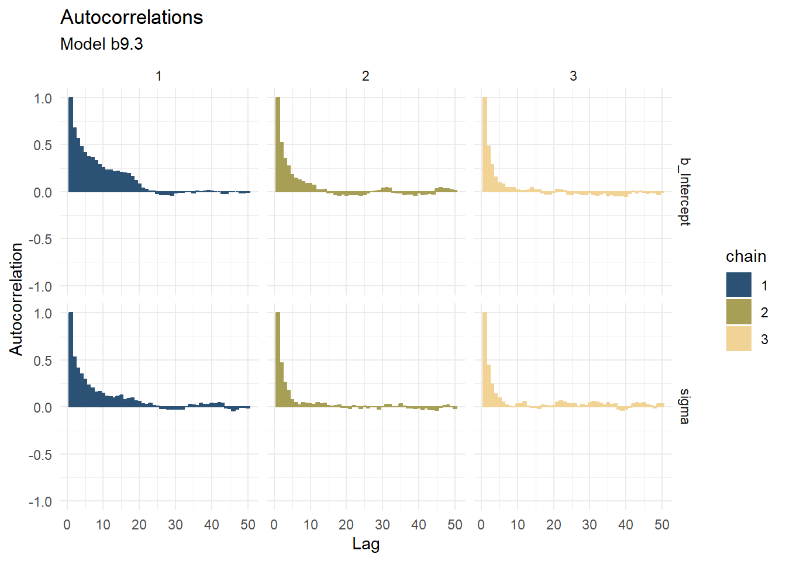
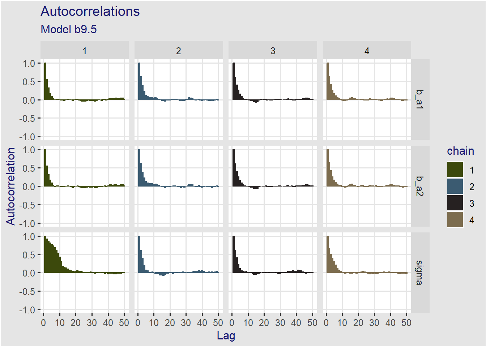
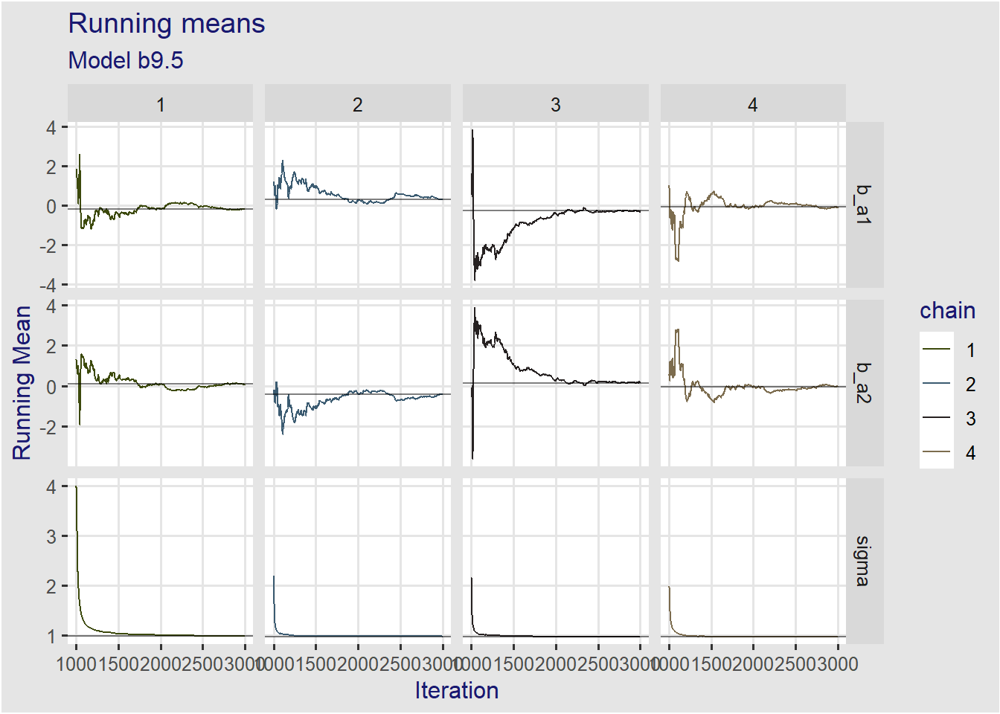

positions <- integer(1e4)
current <- 10
for (i in seq_len(length(positions))) {
# Step 0: record current position
positions[i] <- current
# step 1: flip a coin
set.seed(10 * i)
coin <- sample(x = c(-1, 1), size = 1)
# step 2: nominate the proposal island
# we use modulo arithmetic to simulate a clock
# constant 1 substracted and added to obtain 10 instead of 0
proposal <- (positions[i] + coin - 1) %% 10 + 1
# step 3: count shells and stones
# count of shells = proposal, count of stone = current
# step 4: prob of moving
prob_move <- proposal / positions[i]
current <- ifelse(runif(1) < prob_move, proposal, current)
}
# the itinerary dataframe
itinerary <- data.frame(
week = seq_along(positions),
island = factor(positions, levels = 1:10, ordered = TRUE)
)9 Markov Chain Monte Carlo
9.1 Good King Markov
We define the algorithm to simulate the King’s journey.
and we plot the trajectory for a sample of 100 weeks
set.seed(9)
dp <- itinerary %>%
arrange(week) %>%
slice_head(n = 250)
p1 <- ggplot(data = dp, aes(x = week, y = island)) +
geom_point(aes(color = island), size = 1) +
scale_color_paletteer_d(palette = "ggsci::category10_d3") +
# scale_color_manual(values = colr) +
ggthemes::theme_igray() +
theme(legend.position = "none") +
labs(subtitle = sprintf("Itinerary for the first %d weeks", nrow(dp)),
x = "week #", y = "island")and the frequency of visits to each island
p2 <- ggplot(data = itinerary, aes(x = island)) +
geom_bar(aes(fill = island), stat = "count") +
scale_fill_paletteer_d(palette = "ggsci::category10_d3") +
# scale_color_manual(values = colr) +
ggthemes::theme_igray() +
theme(legend.position = "none") +
labs(subtitle = sprintf("%d weeks", nrow(itinerary)),
x = "island", y = "nb of weeks")which gives figure 9.2
p1 + p2 +
plot_annotation(title = "Figure 9.2", subtitle = "Metropolis algorithm")
9.2 Metropolis algorithms
9.2.1 Gibbs sampling
It is a variant of the Metropolis-Hasting algorithm that is more efficient and uses pairs of conjugate prior and likelihood distributions..
It is the basis for the sofware BUGS (Bayesian inference using Gibbs Sampling) and JAGS (Just Another Gibbs Sampler)
9.2.2 High-dimensional problems
The code for this section comes straight from the same section in Kurz (2020). Many thnaks to Solomon Kurtz for this wonderful gift.
The core issue with high-demensional problems is that parameters will end up having high-correllations which causes the algorithm to get stuck.
McElreath explains it by fire explaining the problem of high correlations itself then how high-demnsionality leads unavoidebly to high corrrelations.
9.2.2.1 The problem of high correlations
To illustrate a bivariate distribution with strong negative autocorrelaiton of -0.9 is used
\[ \begin{align*} \begin{bmatrix} a_1 \\ a_2 \end{bmatrix} &\sim \mathcal{MVNormal}( \begin{bmatrix} 0 \\ 0 \end{bmatrix}, \Sigma ) \\ \Sigma &= \mathbf{SRS} \\ \mathbf{S} &= \begin{bmatrix} 0.22 & 0 \\ 0 & 0.22 \end{bmatrix} \\ \mathbf{R} &= \begin{bmatrix} 1 & -0.9 \\ -0.9 & 1 \end{bmatrix} \end{align*} \] we create the contour of \(x\) and \(y\) values and their bivariate density. See https://stackoverflow.com/questions/36221596/plot-multivariate-gaussian-contours-with-ggplot2 for reference.
# Create the Multivariate distribution matrix
mu <- c(0, 0)
sd_a1 <- 0.22
sd_a2 <- 0.22
rho <- -0.9
S <- matrix(c(sd_a1, 0, 0, sd_a2), nrow = 2, byrow = TRUE)
R <- matrix(c(1, rho, rho, 1), nrow = 2, byrow = TRUE)
Sigma <- S %*% R %*% Sthen create the basic contour map
x_domain <- seq(from = -1.6, to = 1.6, length.out = 200)
y_domain <- seq(from = -1.6, to = 1.6, length.out = 200)
df <- tidyr::expand_grid(a1 = x_domain, a2 = y_domain)
df <- df %>%
mutate(prob = mvtnorm::dmvnorm(x = as.matrix(df), mean = mu, sigma = Sigma))
pcontour <- ggplot(df, aes(x = a1, y = a2, z = prob)) +
geom_contour(aes(color = ..level..),breaks = 9^(-(10 * 1:25))) +
scale_color_paletteer_c("grDevices::Emrld", direction = -1) +
theme_minimal()
pcontourWarning: The dot-dot notation (`..level..`) was deprecated in ggplot2 3.4.0.
ℹ Please use `after_stat(level)` instead.
Define a funciton to implement the Metropolis algorithm. This is a copy from the same section in kurtz2020b.
metropolis <- function(mu, Sigma, num_proposals,
step_size,
starting_point) {
# Initialize vectors where we will keep track of relevant
candidate_x_history <- rep(-Inf, num_proposals)
candidate_y_history <- rep(-Inf, num_proposals)
did_move_history <- rep(FALSE, num_proposals)
# Prepare to begin the algorithm...
current_point <- starting_point
for(i in 1:num_proposals) {
# "Proposals are generated by adding random Gaussian noise
# to each parameter"
noise <- rnorm(n = 2, mean = 0, sd = step_size)
candidate_point <- current_point + noise
# store coordinates of the proposal point
candidate_x_history[i] <- candidate_point[1]
candidate_y_history[i] <- candidate_point[2]
# evaluate the density of our posterior at the proposal point
candidate_prob <- mvtnorm::dmvnorm(candidate_point, mean = mu, sigma = Sigma)
# evaluate the density of our posterior at the current point
current_prob <- mvtnorm::dmvnorm(current_point, mean = mu, sigma = Sigma)
# Decide whether or not we should move to the candidate point
acceptance_ratio <- candidate_prob / current_prob
should_move <- ifelse(runif(n = 1) < acceptance_ratio, TRUE, FALSE)
# Keep track of the decision
did_move_history[i] <- should_move
# Move if necessary
if(should_move) {
current_point <- candidate_point
}
}
# once the loop is complete, store the relevant results in a tibble
results <- tibble::tibble(
candidate_x = candidate_x_history,
candidate_y = candidate_y_history,
accept = did_move_history
)
# compute the "acceptance rate" by dividing the total number of "moves"
# by the total number of proposals
number_of_moves <- results %>% dplyr::pull(accept) %>% sum(.)
acceptance_rate <- number_of_moves/num_proposals
return(list(results = results, acceptance_rate = acceptance_rate))
}and run the algorithm with step size = 0.1
set.seed(9)
round_1 <- metropolis(mu = mu, Sigma = Sigma, num_proposals = 50,
step_size = 0.1,
starting_point = c(-1,1))
# glimpse(round_1)p1 <-
pcontour +
geom_point(data = round_1$results,
aes(x = candidate_x, y = candidate_y, shape = accept,
fill = accept),
inherit.aes = FALSE) +
scale_shape_manual(values = c(21, 21)) +
scale_fill_manual(values = c("FALSE" = "red", "TRUE" = "green")) +
theme(legend.position = "none") +
labs(title = "Round # 1",
subtitle = paste("step size 0.1, accept rate", round_1$acceptance_rate),
x = "a1",
y = "a2")
# p1and for round # 2
set.seed(9)
round_2 <- metropolis(mu = mu, Sigma = Sigma, num_proposals = 50,
step_size = 0.25,
starting_point = c(-1,1))
# glimpse(round_2)p2 <-
pcontour +
geom_point(data = round_2$results,
aes(x = candidate_x, y = candidate_y, shape = accept,
fill = accept),
inherit.aes = FALSE) +
scale_shape_manual(values = c(21, 21)) +
scale_fill_manual(values = c("FALSE" = "red", "TRUE" = "green")) +
theme(legend.position = "none") +
labs(title = "Round # 2",
subtitle = paste("step size 0.25, accept rate", round_2$acceptance_rate),
x = "a1",
y = "a2")
# p2p1 + p2 +
plot_annotation("Metropolis chain under high correlation")
9.2.2.2 Concentration of measure
To do on a rainy day
9.3 Hamiltonian Monte Carlo
To do. Not critical to do the rest of the book.
9.4 Easy HMC: ulam with brms::brm()
Same data as in chapter 8.
data(rugged)
d <- rugged %>%
filter(complete.cases(rgdppc_2000)) %>%
mutate(log_gdp = log(rgdppc_2000),
is_africa = if_else(cont_africa == 1, "Africa", "Not Africa"),
is_africa = as.factor(is_africa))
rm(rugged)
dd <- d %>%
drop_na(rgdppc_2000) %>%
mutate(log_gdp_s = log_gdp / mean(log_gdp),
rugged_s = scales::rescale(rugged),
# rugged_s = rugged / max(rugged),
rugged_sc = as.vector(scale(rugged_s, center = TRUE, scale = FALSE)),
cid = as.factor(if_else(cont_africa == 1, "1", "2")))
# skimr::skim(dd)9.4.1 Preparation
dat_slim <- dd %>%
select(log_gdp_s, rugged_s, rugged_sc, cid) %>%
list()
str(dat_slim)List of 1
$ :'data.frame': 170 obs. of 4 variables:
..$ log_gdp_s: num [1:170] 0.88 0.965 1.166 1.104 0.915 ...
..$ rugged_s : num [1:170] 0.138 0.552 0.124 0.125 0.433 ...
..$ rugged_sc: num [1:170] -0.0767 0.3378 -0.091 -0.09 0.2186 ...
..$ cid : Factor w/ 2 levels "1","2": 1 2 2 2 2 2 2 2 2 1 ...9.4.2 Sampling from the posterior
This is easy with tidybayes. The model is
\[ \begin{align*} log\_gdp\_s_i &\sim \mathcal{N}(\mu_i, \sigma) \\ \mu &= \alpha_{cid[i]} + \beta_{cid[i]} \cdot rugged\_sc \\ \alpha_{cid[i]} &\sim \mathcal{N}(1, 0.1) \\ \beta_{cid[i]} &\sim \mathcal{N}(1, 0.3) \\ \sigma &\sim \mathcal{Exp}(1) \end{align*} \]
tictoc::tic(msg = sprintf("run time of %s, use the cache.", "80 secs."))
b9.1 <- xfun::cache_rds({
brms::brm(
data = dd,
family = gaussian,
formula = bf(log_gdp_s ~ 0 + a + b*(rugged_sc),
a ~ 0 + cid,
b ~ 0 + cid,
nl = TRUE),
prior = c(prior(normal(1, 0.1), class = b, coef = cid1, nlpar = a),
prior(normal(1, 0.1), class = b, coef = cid2, nlpar = a),
prior(normal(0, 0.3), class = b, coef = cid1, nlpar = b),
prior(normal(0, 0.3), class = b, coef = cid2, nlpar = b),
prior(exponential(1), class = sigma)),
chains = 1, cores = 1, seed = 9)},
file = "ch09_b09_01")
tictoc::toc()run time of 80 secs., use the cache.: 0.11 sec elapsedprint(b9.1) Family: gaussian
Links: mu = identity; sigma = identity
Formula: log_gdp_s ~ 0 + a + b * (rugged_sc)
a ~ 0 + cid
b ~ 0 + cid
Data: dd (Number of observations: 170)
Draws: 1 chains, each with iter = 2000; warmup = 1000; thin = 1;
total post-warmup draws = 1000
Population-Level Effects:
Estimate Est.Error l-95% CI u-95% CI Rhat Bulk_ESS Tail_ESS
a_cid1 0.89 0.02 0.86 0.92 1.00 1033 671
a_cid2 1.05 0.01 1.03 1.07 1.00 1536 849
b_cid1 0.14 0.07 0.00 0.28 1.00 1007 786
b_cid2 -0.14 0.05 -0.25 -0.04 1.00 1344 701
Family Specific Parameters:
Estimate Est.Error l-95% CI u-95% CI Rhat Bulk_ESS Tail_ESS
sigma 0.11 0.01 0.10 0.12 1.00 1279 713
Draws were sampled using sampling(NUTS). For each parameter, Bulk_ESS
and Tail_ESS are effective sample size measures, and Rhat is the potential
scale reduction factor on split chains (at convergence, Rhat = 1).tidybayes::get_variables(b9.1) [1] "b_a_cid1" "b_a_cid2" "b_b_cid1" "b_b_cid2"
[5] "sigma" "lprior" "lp__" "accept_stat__"
[9] "stepsize__" "treedepth__" "n_leapfrog__" "divergent__"
[13] "energy__" Note that we use mean_hdi() but there are many more of these functions in ggdist() (which are actually carried forward in tidybayes).
b9.1_post <- tidybayes::gather_draws(model = b9.1,
b_a_cid1, b_a_cid2, b_b_cid1, b_b_cid2,
sigma) %>%
ggdist::mean_hdi(.value, .width = 0.89)
b9.1_post# A tibble: 5 × 7
.variable .value .lower .upper .width .point .interval
<chr> <dbl> <dbl> <dbl> <dbl> <chr> <chr>
1 b_a_cid1 0.887 0.861 0.913 0.89 mean hdi
2 b_a_cid2 1.05 1.04 1.07 0.89 mean hdi
3 b_b_cid1 0.137 0.0319 0.255 0.89 mean hdi
4 b_b_cid2 -0.142 -0.235 -0.0595 0.89 mean hdi
5 sigma 0.112 0.102 0.122 0.89 mean hdi 9.4.3 Sampling again, in parallel
tictoc::tic(msg = sprintf("run time of %s, use the cache.", "20 secs."))
b9.1b <- xfun::cache_rds({
update(b9.1, chains = 4, cores = 4, seed = 9)},
file = "ch09_b09_01b")
tictoc::toc()run time of 20 secs., use the cache.: 0.14 sec elapsedprint(b9.1b) Family: gaussian
Links: mu = identity; sigma = identity
Formula: log_gdp_s ~ 0 + a + b * (rugged_sc)
a ~ 0 + cid
b ~ 0 + cid
Data: dd (Number of observations: 170)
Draws: 4 chains, each with iter = 2000; warmup = 1000; thin = 1;
total post-warmup draws = 4000
Population-Level Effects:
Estimate Est.Error l-95% CI u-95% CI Rhat Bulk_ESS Tail_ESS
a_cid1 0.89 0.02 0.86 0.92 1.00 4349 2761
a_cid2 1.05 0.01 1.03 1.07 1.00 5257 3018
b_cid1 0.13 0.07 -0.01 0.28 1.00 4595 3084
b_cid2 -0.14 0.05 -0.25 -0.03 1.00 5428 3398
Family Specific Parameters:
Estimate Est.Error l-95% CI u-95% CI Rhat Bulk_ESS Tail_ESS
sigma 0.11 0.01 0.10 0.12 1.00 4831 2754
Draws were sampled using sampling(NUTS). For each parameter, Bulk_ESS
and Tail_ESS are effective sample size measures, and Rhat is the potential
scale reduction factor on split chains (at convergence, Rhat = 1).and we can see the formula
b9.1b$formulalog_gdp_s ~ 0 + a + b * (rugged_sc)
a ~ 0 + cid
b ~ 0 + cid# and we can deparse it when plotting
deparse1(b9.1b$formula$formula)[1] "log_gdp_s ~ 0 + a + b * (rugged_sc)"and obtain informaiton on the model priors
b9.1b$prior prior class coef group resp dpar nlpar lb ub source
(flat) b a default
normal(1, 0.1) b cid1 a user
normal(1, 0.1) b cid2 a user
(flat) b b default
normal(0, 0.3) b cid1 b user
normal(0, 0.3) b cid2 b user
exponential(1) sigma 0 useror using the function provided for this purpose
prior_summary(b9.1b) prior class coef group resp dpar nlpar lb ub source
(flat) b a default
normal(1, 0.1) b cid1 a user
normal(1, 0.1) b cid2 a user
(flat) b b default
normal(0, 0.3) b cid1 b user
normal(0, 0.3) b cid2 b user
exponential(1) sigma 0 user9.4.4 Visualization
We use GGally. It can also be done using the ggmcmc package with ggs_pairs. The bayesplot package also has many different plots. It is more sophisticated than ggmcmc with some vignettes explaining how to diagnose the chains.
For this we choose to used ggmcmc which has trank plot and provides the wartmup.
Also note that Solomon Kurtz Kurz (2020) has a lot more options and recipes about all of these plots. It is worthwhile reading before losing time finding solutions on the web.
b9.1b_postwide <- tidybayes::spread_draws(model = b9.1b, b_a_cid1, b_a_cid2, b_b_cid1, b_b_cid2,
sigma) %>%
select(.chain, b_a_cid1, b_a_cid2, b_b_cid1, b_b_cid2, sigma)
# glimpse(b9.1b_postwide)
# p <- GGally::ggpairs(b9.1b_post, columns = c("b_a_cid1", "b_a_cid2", "b_b_cid1", "b_b_cid2", "sigma"),
# aes(colour = as.factor(.chain)))
# p
b9.1b_pairs <- GGally::ggscatmat(b9.1b_postwide,
columns = c("b_a_cid1", "b_a_cid2", "b_b_cid1", "b_b_cid2", "sigma"),
color = ".chain") +
scale_color_paletteer_d("lisa::LeeKrasner") +
theme_minimal() +
labs(title = "Model b9.1b")
b9.1b_pairs
and the crosscorrelations which could also be done with ggmcmc but are a little mode flexible to use with GGally, in particular we can get in lower triable format
b9.1b_corr <- GGally::ggcorr(b9.1b_postwide[, c("b_a_cid1", "b_a_cid2", "b_b_cid1", "b_b_cid2", "sigma")],
color = "darkgreen",
nbreaks = 13, label = TRUE, label_round = 2,
label_color = "midnightblue") +
scale_fill_paletteer_d(palette = "ggthemr::dust") +
theme(legend.position = c(0.1, 0.8),
legend.title = element_blank(),
title = element_text(color = "midnightblue")) +
labs(title = "Correlations between parameters",
subtitle = "Model b9.1b")Scale for fill is already present.
Adding another scale for fill, which will replace the existing scale.b9.1b_corr
9.4.5 Checking the chain
The ggmcmc package always starts with the ggs() function which extract the posterior draws and organize them in a tibble. The ggmcmc is very useful with family of parametrs. i.e.e parameter which are indexed. See the family argument in the ggs functions.
See more info on ggmcmc at ggmcmc
b9.1b_ggs <- ggmcmc::ggs(b9.1b)
str(b9.1b_ggs)tibble [48,000 × 4] (S3: tbl_df/tbl/data.frame)
$ Iteration: int [1:48000] 1 2 3 4 5 6 7 8 9 10 ...
$ Chain : int [1:48000] 1 1 1 1 1 1 1 1 1 1 ...
$ Parameter: Factor w/ 6 levels "b_a_cid1","b_a_cid2",..: 1 1 1 1 1 1 1 1 1 1 ...
$ value : num [1:48000] 0.771 0.771 0.771 0.771 0.836 ...
- attr(*, "nChains")= int 4
- attr(*, "nParameters")= int 6
- attr(*, "nIterations")= int 2000
- attr(*, "nBurnin")= num 1000
- attr(*, "nThin")= num 1
- attr(*, "description")= chr "anon_model"9.4.5.1 Trace plot
ggs_traceplot(b9.1b_ggs) +
scale_color_paletteer_d("lisa::LeeKrasner") +
theme_minimal() +
# ggthemes::theme_clean() +
labs(title = "Trace plot",
subtitle = "Model b9.1b", color = "chain")Scale for colour is already present.
Adding another scale for colour, which will replace the existing scale.
9.4.5.2 Trank plot
This is a special case, only done with bayesplot. See how it is done in section 9.4.5 of Kurz (2020).
You have to read section 9.5.3, Figure 9.9, to understand how to read a trank plot.
b9.1b_post <- posterior_samples(b9.1b, add_chain = TRUE)Warning: Method 'posterior_samples' is deprecated. Please see ?as_draws for
recommended alternatives.b9.1b_post %>%
bayesplot::mcmc_rank_overlay(pars = vars(b_a_cid1:sigma)) +
scale_color_paletteer_d("lisa::LeeKrasner") +
coord_cartesian(ylim = c(25, NA)) +
theme(legend.position = c(.95, .20)) +
labs(title = "Trank plot",
subtitle = "Model b9.1b", color = "chain")Scale for colour is already present.
Adding another scale for colour, which will replace the existing scale.
9.4.5.3 Running means
ggs_running(b9.1b_ggs) +
scale_color_paletteer_d("lisa::LeeKrasner") +
theme_minimal() +
labs(title = "Running means",
subtitle = "Model b9.1b", color = "chain")Scale for colour is already present.
Adding another scale for colour, which will replace the existing scale.
9.4.6 Crosscorrelations
I prefer the crosscorrelaion plot as done with GGally above, with lower triangle
ggs_crosscorrelation(b9.1b_ggs) +
scale_fill_paletteer_c("grDevices::Emrld", direction = -1) +
theme_minimal() +
labs(title = "Crosscorrelations",
subtitle = "Model b9.1b", color = "chain")Scale for fill is already present.
Adding another scale for fill, which will replace the existing scale.
9.4.6.1 Autocorrelations
ggs_autocorrelation(b9.1b_ggs) +
scale_fill_paletteer_d("lisa::LeeKrasner") +
scale_color_paletteer_d("lisa::LeeKrasner", guide = "none") +
theme_minimal() +
labs(title = "Autocorrelations",
subtitle = "Model b9.1b", color = NULL, fill = "chain")Scale for fill is already present.
Adding another scale for fill, which will replace the existing scale.
Scale for colour is already present.
Adding another scale for colour, which will replace the existing scale.
9.4.6.2 Overthinking: Raw Stan model code
We can use the brms::stancode() function to get the stan code from the brmsfit object
brms::stancode(b9.1b)// generated with brms 2.18.0
functions {
}
data {
int<lower=1> N; // total number of observations
vector[N] Y; // response variable
int<lower=1> K_a; // number of population-level effects
matrix[N, K_a] X_a; // population-level design matrix
int<lower=1> K_b; // number of population-level effects
matrix[N, K_b] X_b; // population-level design matrix
// covariate vectors for non-linear functions
vector[N] C_1;
int prior_only; // should the likelihood be ignored?
}
transformed data {
}
parameters {
vector[K_a] b_a; // population-level effects
vector[K_b] b_b; // population-level effects
real<lower=0> sigma; // dispersion parameter
}
transformed parameters {
real lprior = 0; // prior contributions to the log posterior
lprior += normal_lpdf(b_a[1] | 1, 0.1);
lprior += normal_lpdf(b_a[2] | 1, 0.1);
lprior += normal_lpdf(b_b[1] | 0, 0.3);
lprior += normal_lpdf(b_b[2] | 0, 0.3);
lprior += exponential_lpdf(sigma | 1);
}
model {
// likelihood including constants
if (!prior_only) {
// initialize linear predictor term
vector[N] nlp_a = rep_vector(0.0, N);
// initialize linear predictor term
vector[N] nlp_b = rep_vector(0.0, N);
// initialize non-linear predictor term
vector[N] mu;
nlp_a += X_a * b_a;
nlp_b += X_b * b_b;
for (n in 1:N) {
// compute non-linear predictor values
mu[n] = 0 + nlp_a[n] + nlp_b[n] * (C_1[n]);
}
target += normal_lpdf(Y | mu, sigma);
}
// priors including constants
target += lprior;
}
generated quantities {
}9.5 Care and feeding of your Markov chain
The brms defaults are iter = 2000 and warmup = 1000.
9.5.1 How many samples do you need
In brms the n_eff mentioned by McElreath is bulk_ESS. The tail ESS discussed by McElreath is the tail_ESS value in brms.
9.5.2 How many chains do you need
For more information on convergence statistics \(\mathcal{\widehat{R}}\) see section 9.5.2.1 in Kurz (2020).
9.5.3 Taming a wild chain
The start argument in rethinking is replaced by inits in brms. The simple example of a wild chain is as follows. Note that brms can take data in the form of a list.
I find much easier to understand the issues by looking at the autocorrelation and the mean plots created with ggmcmc::ggs_running() and ggmcmc::ggs_autocorrelation(). They will be used often in this work to visualize the Markov chain.
9.5.3.1 Divergent transitions
We create a model that has poor priors
\[ \begin{align*} y_i &\sim \mathcal{N}(\mu, \sigma) \\ \mu &= \alpha \\ \alpha &\sim \mathcal{N}(1, 1000) \\ \sigma &\sim \mathcal{Exp}(0.0001) \end{align*} \]
tictoc::tic(msg = sprintf("run time of %s, use the cache.", "80 secs."))
b9.2 <- xfun::cache_rds({
out <- brm(data = list(y = c(-1, 1)),
family = gaussian,
y ~ 1,
prior = c(prior(normal(0, 1000), class = Intercept),
prior(exponential(0.0001), class = sigma)),
iter = 2000, warmup = 1000, chains = 3, seed = 9)},
file = "ch09_b09_02")
tictoc::toc()run time of 80 secs., use the cache.: 0.13 sec elapsedsummary(b9.2)Warning: Parts of the model have not converged (some Rhats are > 1.05). Be
careful when analysing the results! We recommend running more iterations and/or
setting stronger priors.Warning: There were 595 divergent transitions after warmup. Increasing
adapt_delta above 0.8 may help. See http://mc-stan.org/misc/
warnings.html#divergent-transitions-after-warmup Family: gaussian
Links: mu = identity; sigma = identity
Formula: y ~ 1
Data: list(y = c(-1, 1)) (Number of observations: 2)
Draws: 3 chains, each with iter = 2000; warmup = 1000; thin = 1;
total post-warmup draws = 3000
Population-Level Effects:
Estimate Est.Error l-95% CI u-95% CI Rhat Bulk_ESS Tail_ESS
Intercept 0.37 310.88 -691.22 683.09 1.08 472 385
Family Specific Parameters:
Estimate Est.Error l-95% CI u-95% CI Rhat Bulk_ESS Tail_ESS
sigma 515.45 1217.56 13.14 3568.10 1.05 44 78
Draws were sampled using sampling(NUTS). For each parameter, Bulk_ESS
and Tail_ESS are effective sample size measures, and Rhat is the potential
scale reduction factor on split chains (at convergence, Rhat = 1).The results are pretty bad, just like McElreath wanted them. The brms::nuts_params() provide much diagnostic informations. The type of information is in the Parameter column.
nuts_params(b9.2) %>%
distinct(Parameter) Parameter
1 accept_stat__
2 stepsize__
3 treedepth__
4 n_leapfrog__
5 divergent__
6 energy__In the current case, the divergent transitions are the issue. For this we look at Parameter == "divergent__".
nuts_params(b9.2) %>%
filter(Parameter == "divergent__") %>%
count(Value) Value n
1 0 2405
2 1 595and plotting the trace and trank
b9.2_ggs <- ggmcmc::ggs(b9.2)
p1 <- ggs_traceplot(b9.2_ggs) +
scale_color_paletteer_d("lisa::Pierre_AugusteRenoir") +
theme_minimal()Scale for colour is already present.
Adding another scale for colour, which will replace the existing scale.# p1
p2 <- posterior_samples(b9.2, add_chain = TRUE) %>%
bayesplot::mcmc_rank_overlay(pars = vars(b_Intercept:sigma)) +
scale_color_paletteer_d("lisa::Pierre_AugusteRenoir")Warning: Method 'posterior_samples' is deprecated. Please see ?as_draws for
recommended alternatives.Scale for colour is already present.
Adding another scale for colour, which will replace the existing scale.# p2
# we use patchwork
(
(p1 / p2) &
theme(legend.position = "none")
) +
plot_annotation(title = "These chains are not healthy",
subtitle = "Model b9.2")we can also see that the parameter’s mean has a very hard time reaching a solution with different behaviors between the chains, i.e. the chains behave erratically.
ggs_running(b9.2_ggs) +
scale_color_paletteer_d("lisa::Pierre_AugusteRenoir") +
theme_minimal() +
labs(title = "Running means",
subtitle = "Model b9.2", color = "chain")Scale for colour is already present.
Adding another scale for colour, which will replace the existing scale.
and the autocorrelations are not as well behave as we normally see
ggs_autocorrelation(b9.2_ggs) +
scale_fill_paletteer_d("lisa::Pierre_AugusteRenoir") +
scale_color_paletteer_d("lisa::Pierre_AugusteRenoir", guide = FALSE) +
theme_minimal() +
labs(title = "Autocorrelations",
subtitle = "Model b9.2", color = NULL, fill = "chain")Scale for fill is already present.
Adding another scale for fill, which will replace the existing scale.
Scale for colour is already present.
Adding another scale for colour, which will replace the existing scale.Warning: The `guide` argument in `scale_*()` cannot be `FALSE`. This was deprecated in
ggplot2 3.3.4.
ℹ Please use "none" instead.
ℹ The deprecated feature was likely used in the ggmcmc package.
Please report the issue at <https://github.com/xfim/ggmcmc/issues/>.
9.5.3.2 Convergent transitions
Now lets give it little better priors to solve the issue. The model is as follows
\[ \begin{align*} y_i &\sim \mathcal{N}(\mu, \sigma) \\ \mu &= \alpha \\ \alpha &\sim \mathcal{N}(1, 10) \\ \sigma &\sim \mathcal{Exp}(1) \end{align*} \]
tictoc::tic(msg = sprintf("run time of %s, use the cache.", "60 secs."))
b9.3 <- xfun::cache_rds({
brm(data = list(y = c(-1, 1)),
family = gaussian,
y ~ 1,
prior = c(prior(normal(1, 10), class = Intercept),
prior(exponential(1), class = sigma)),
iter = 2000, warmup = 1000, chains = 3, seed = 9)},
file = "ch09_b09_03")
tictoc::toc()run time of 60 secs., use the cache.: 0.12 sec elapsedsummary(b9.3)Warning: There were 2 divergent transitions after warmup. Increasing adapt_delta
above 0.8 may help. See http://mc-stan.org/misc/warnings.html#divergent-
transitions-after-warmup Family: gaussian
Links: mu = identity; sigma = identity
Formula: y ~ 1
Data: list(y = c(-1, 1)) (Number of observations: 2)
Draws: 3 chains, each with iter = 2000; warmup = 1000; thin = 1;
total post-warmup draws = 3000
Population-Level Effects:
Estimate Est.Error l-95% CI u-95% CI Rhat Bulk_ESS Tail_ESS
Intercept 0.03 1.13 -2.21 2.50 1.00 945 624
Family Specific Parameters:
Estimate Est.Error l-95% CI u-95% CI Rhat Bulk_ESS Tail_ESS
sigma 1.54 0.84 0.60 3.71 1.00 909 1245
Draws were sampled using sampling(NUTS). For each parameter, Bulk_ESS
and Tail_ESS are effective sample size measures, and Rhat is the potential
scale reduction factor on split chains (at convergence, Rhat = 1).and the results are more convincing
b9.3_ggs <- ggmcmc::ggs(b9.3)
p1 <- ggs_traceplot(b9.3_ggs) +
scale_color_paletteer_d("lisa::Pierre_AugusteRenoir") +
theme_minimal()Scale for colour is already present.
Adding another scale for colour, which will replace the existing scale.# p1
p2 <- posterior_samples(b9.3, add_chain = TRUE) %>%
bayesplot::mcmc_rank_overlay(pars = vars(b_Intercept:sigma)) +
scale_color_paletteer_d("lisa::Pierre_AugusteRenoir")Warning: Method 'posterior_samples' is deprecated. Please see ?as_draws for
recommended alternatives.Scale for colour is already present.
Adding another scale for colour, which will replace the existing scale.# p2
# we use patchwork
(
(p1 / p2) &
theme(legend.position = "none")
) +
plot_annotation(title = "Better results even with weakly informative priors",
subtitle = "Model b9.3")
and we can see the parameter’s mean behaving similarly.
ggs_running(b9.3_ggs) +
scale_color_paletteer_d("lisa::Pierre_AugusteRenoir") +
theme_minimal() +
labs(title = "Running means",
subtitle = "Model b9.3", color = "chain")Scale for colour is already present.
Adding another scale for colour, which will replace the existing scale.
and the autocorrelations have certainly improved
ggs_autocorrelation(b9.3_ggs) +
scale_fill_paletteer_d("lisa::Pierre_AugusteRenoir") +
scale_color_paletteer_d("lisa::Pierre_AugusteRenoir", guide = FALSE) +
theme_minimal() +
labs(title = "Autocorrelations",
subtitle = "Model b9.3", color = NULL, fill = "chain")Scale for fill is already present.
Adding another scale for fill, which will replace the existing scale.
Scale for colour is already present.
Adding another scale for colour, which will replace the existing scale.
9.5.4 Non-identifiable parameters
The data and model is not exactly what McElreath did but it illustrate the same thing. See Kurz (2020) for more details.
set.seed(9)
y <- rnorm(100, mean = 0, sd = 1)9.5.4.1 Non-identifiable parameters with very wide priors
the model with unreasonable priors
tictoc::tic(msg = sprintf("run time of %s, use the cache.", "90 secs."))
b9.4 <- xfun::cache_rds({
brm(data = list(y = y,
a1 = 1,
a2 = 1),
family = gaussian,
y ~ 0 + a1 + a2,
prior = c(prior(normal(0, 1000), class = b),
prior(exponential(1), class = sigma)),
iter = 2000, warmup = 1000, chains = 3, seed = 9)},
file = "ch09_b09_04")
tictoc::toc()run time of 90 secs., use the cache.: 0.17 sec elapsedsummary(b9.4)Warning: Parts of the model have not converged (some Rhats are > 1.05). Be
careful when analysing the results! We recommend running more iterations and/or
setting stronger priors. Family: gaussian
Links: mu = identity; sigma = identity
Formula: y ~ 0 + a1 + a2
Data: list(y = y, a1 = 1, a2 = 1) (Number of observations: 100)
Draws: 3 chains, each with iter = 2000; warmup = 1000; thin = 1;
total post-warmup draws = 3000
Population-Level Effects:
Estimate Est.Error l-95% CI u-95% CI Rhat Bulk_ESS Tail_ESS
a1 -504.18 390.00 -1092.51 248.90 1.30 8 47
a2 504.12 390.00 -249.05 1092.59 1.30 8 47
Family Specific Parameters:
Estimate Est.Error l-95% CI u-95% CI Rhat Bulk_ESS Tail_ESS
sigma 1.00 0.06 0.90 1.13 1.18 13 81
Draws were sampled using sampling(NUTS). For each parameter, Bulk_ESS
and Tail_ESS are effective sample size measures, and Rhat is the potential
scale reduction factor on split chains (at convergence, Rhat = 1).get_variables(b9.4) [1] "b_a1" "b_a2" "sigma" "lprior"
[5] "lp__" "accept_stat__" "stepsize__" "treedepth__"
[9] "n_leapfrog__" "divergent__" "energy__" b9.4_ggs <- ggmcmc::ggs(b9.4)
p1 <- ggs_traceplot(b9.4_ggs) +
scale_color_paletteer_d("lisa::JanvanEyck") +
theme_minimal()Scale for colour is already present.
Adding another scale for colour, which will replace the existing scale.# p1
p2 <- posterior_samples(b9.4, add_chain = TRUE) %>%
bayesplot::mcmc_rank_overlay(pars = vars(b_a1:sigma)) +
scale_color_paletteer_d("lisa::JanvanEyck")Warning: Method 'posterior_samples' is deprecated. Please see ?as_draws for
recommended alternatives.Scale for colour is already present.
Adding another scale for colour, which will replace the existing scale.# p2
# we use patchwork
(
(p1 / p2) &
theme(legend.position = "none")
) +
plot_annotation(title = "Non-identifiable parameters with uninformative priors",
subtitle = "Model b9.4")
where we can see that the autocorrelations are a major cause of problems!
ggs_autocorrelation(b9.4_ggs) +
scale_fill_paletteer_d("lisa::JanvanEyck") +
scale_color_paletteer_d("lisa::JanvanEyck", guide = FALSE) +
theme_minimal() +
labs(title = "Autocorrelations",
subtitle = "Model b9.4", color = NULL, fill = "chain")Scale for fill is already present.
Adding another scale for fill, which will replace the existing scale.
Scale for colour is already present.
Adding another scale for colour, which will replace the existing scale.
which causes the means the be all over the place
ggs_running(b9.4_ggs) +
scale_color_paletteer_d("lisa::JanvanEyck") +
theme_minimal() +
labs(title = "Running means",
subtitle = "Model b9.4", color = "chain")Scale for colour is already present.
Adding another scale for colour, which will replace the existing scale.
9.5.4.2 Non-identifiable parameters with weakly informative priors
and the model with weakly informative priors
tictoc::tic(msg = sprintf("run time of %s, use the cache.", "80 secs."))
b9.5 <- xfun::cache_rds({
brm(data = list(y = y,
a1 = 1,
a2 = 1),
family = gaussian,
y ~ 0 + a1 + a2,
prior = c(prior(normal(0, 10), class = b),
prior(exponential(1), class = sigma)),
iter = 2000, warmup = 1000, chains = 3, seed = 9)},
file = "ch09_b09_05")
tictoc::toc()run time of 80 secs., use the cache.: 0.16 sec elapsedsummary(b9.5) Family: gaussian
Links: mu = identity; sigma = identity
Formula: y ~ 0 + a1 + a2
Data: list(y = y, a1 = 1, a2 = 1) (Number of observations: 100)
Draws: 3 chains, each with iter = 2000; warmup = 1000; thin = 1;
total post-warmup draws = 3000
Population-Level Effects:
Estimate Est.Error l-95% CI u-95% CI Rhat Bulk_ESS Tail_ESS
a1 -0.44 7.21 -14.73 13.47 1.00 827 1005
a2 0.39 7.21 -13.54 14.80 1.00 827 1028
Family Specific Parameters:
Estimate Est.Error l-95% CI u-95% CI Rhat Bulk_ESS Tail_ESS
sigma 0.97 0.07 0.84 1.11 1.00 1153 848
Draws were sampled using sampling(NUTS). For each parameter, Bulk_ESS
and Tail_ESS are effective sample size measures, and Rhat is the potential
scale reduction factor on split chains (at convergence, Rhat = 1).now the plots make more sense
b9.5_ggs <- ggmcmc::ggs(b9.5)
p1 <- ggs_traceplot(b9.5_ggs) +
scale_color_paletteer_d("lisa::JanvanEyck") +
theme_minimal()Scale for colour is already present.
Adding another scale for colour, which will replace the existing scale.# p1
p2 <- posterior_samples(b9.5, add_chain = TRUE) %>%
bayesplot::mcmc_rank_overlay(pars = vars(b_a1:sigma)) +
scale_color_paletteer_d("lisa::JanvanEyck")Warning: Method 'posterior_samples' is deprecated. Please see ?as_draws for
recommended alternatives.Scale for colour is already present.
Adding another scale for colour, which will replace the existing scale.# p2
# we use patchwork
(
(p1 / p2) &
theme(legend.position = "none")
) +
plot_annotation(title = "Non-identifiable parameters withw eakly informative priors",
subtitle = "Model b9.5")
where we can see that the autocorrelations are better now
ggs_autocorrelation(b9.5_ggs) +
scale_fill_paletteer_d("lisa::JanvanEyck") +
scale_color_paletteer_d("lisa::JanvanEyck", guide = FALSE) +
theme_minimal() +
labs(title = "Autocorrelations",
subtitle = "Model b9.5", color = NULL, fill = "chain")Scale for fill is already present.
Adding another scale for fill, which will replace the existing scale.
Scale for colour is already present.
Adding another scale for colour, which will replace the existing scale.
and the means are also much improved, actually we might even take a smaller sample size.
ggs_running(b9.5_ggs) +
scale_color_paletteer_d("lisa::JanvanEyck") +
theme_minimal() +
labs(title = "Running means",
subtitle = "Model b9.5", color = "chain")Scale for colour is already present.
Adding another scale for colour, which will replace the existing scale.
9.5.4.3 ggs_running and ggs_autocorrelation
I find much easier to understand the issues by looking at the autocorrelation and the mean plots. They are a very nice complement to the trace and trank plots.